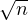

Your abstract.
Your introduction goes here! Simply start writing your document and use the Recompile button to view the updated PDF preview. Examples of commonly used commands and features are listed below, to help you get started.
Once you’re familiar with the editor, you can find various project settings in the Overleaf menu, accessed via the button in the very top left of the editor. To view tutorials, user guides, and further documentation, please visit our help library, or head to our plans page to choose your plan.
Simply use the section and subsection commands, as in this example document! With Overleaf, all the formatting and numbering is handled automatically according to the template you’ve chosen. If you’re using Rich Text mode, you can also create new section and subsections via the buttons in the editor toolbar.
First you have to upload the image file from your computer using the upload link in the file-tree menu. Then use the includegraphics command to include it in your document. Use the figure environment and the caption command to add a number and a caption to your figure. See the code for Figure 1 in this section for an example.
Note that your figure will automatically be placed in the most appropriate place for it, given the surrounding text and taking into account other figures or tables that may be close by. You can find out more about adding images to your documents in this help article on including images on Overleaf.
Use the table and tabular environments for basic tables — see Table 1, for example. For more information, please see this help article on tables.
Comments can be added to your project by highlighting some text and clicking “Add comment” in the top right of the editor pane. To view existing comments, click on the Review menu in the toolbar above. To reply to a comment, click on the Reply button in the lower right corner of the comment. You can close the Review pane by clicking its name on the toolbar when you’re done reviewing for the time being.
Track changes are available on all our premium plans, and can be toggled on or off using the option at the top of the Review pane. Track changes allow you to keep track of every change made to the document, along with the person making the change.
You can make lists with automatic numbering …
…or bullet points …
LaTeX is great at typesetting mathematics. Let X1,X2,…,Xn be a sequence of independent and identically distributed random variables with E[Xi] = μ and Var[Xi] = σ2 < ∞, and let
denote their mean. Then as n approaches infinity, the random variables (S n − μ) converge in distribution to a normal 𝒩(0,σ2).
Usually the template you’re using will have the page margins and paper size set correctly for that use-case. For example, if you’re using a journal article template provided by the journal publisher, that template will be formatted according to their requirements. In these cases, it’s best not to alter the margins directly.
If however you’re using a more general template, such as this one, and would like to alter the margins, a common way to do so is via the geometry package. You can find the geometry package loaded in the preamble at the top of this example file, and if you’d like to learn more about how to adjust the settings, please visit this help article on page size and margins.
Overleaf supports many different languages, including multiple different languages within one document.
To configure the document language, simply edit the option provided to the babel package in the preamble at the top of this example project. To learn more about the different options, please visit this help article on international language support.
To change the spell check language, simply open the Overleaf menu at the top left of the editor window, scroll down to the spell check setting, and adjust accordingly.
You can simply upload a .bib file containing your BibTeX entries, created with a tool such as JabRef. You can then cite entries from it, like this: [Gre93]. Just remember to specify a bibliography style, as well as the filename of the .bib. You can find a video tutorial here to learn more about BibTeX.
If you have an upgraded account, you can also import your Mendeley or Zotero library directly as a .bib file, via the upload menu in the file-tree.
We hope you find Overleaf useful, and do take a look at our help library for more tutorials and user guides! Please also let us know if you have any feedback using the Contact Us link at the bottom of the Overleaf menu — or use the contact form at https://www.overleaf.com/contact.